Kurgu & Timeline
Çok izli timeline, kenetlenme ve geçişler. Program monitörü aynı pencerede.
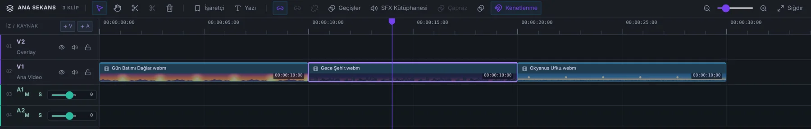
Mac için yapay zekâ destekli video editörü. Komutunu yaz, Karevo timeline'da uygulasın. Arayüz baştan sona Türkçe.
macOS · Apple Silicon · Ücretsiz
Küreye dokunun, bir komut yazın
Demo: hazır yanıtlar verir, gerçek bir yapay zekâya bağlı değildir.
Uygulama
Timeline, program monitörü ve medya havuzu.
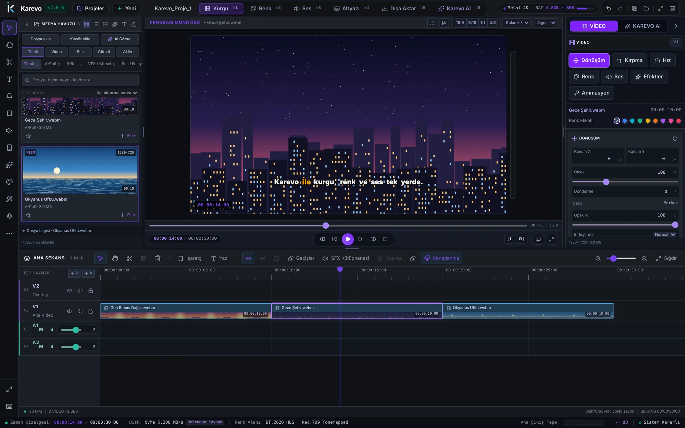
Karevo AI
Her konuda sohbet eder. Kurgu komutlarını timeline'da uygular ve medya havuzunu görür.
Codex, Claude ve Gemini CLI'ları veya bir API anahtarıyla çalışır.
Medya havuzundaki videoyu ekle, sessiz yerleri kes
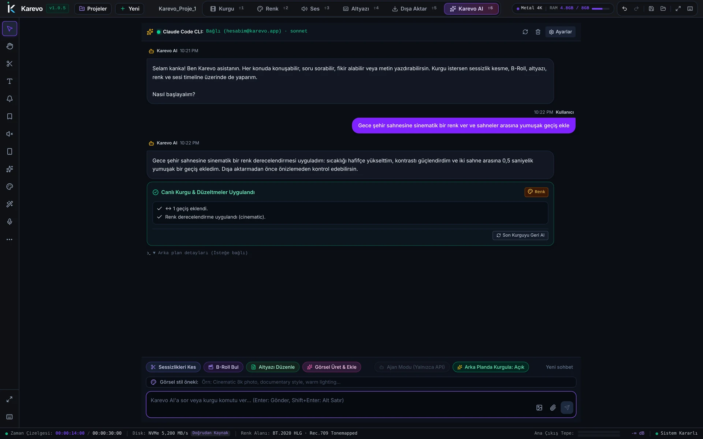
Modeller
Claude, Codex, Gemini ve OpenCode CLI'ları ya da kendi API anahtarınız. Her sağlayıcı için modeli ayrı seçin.
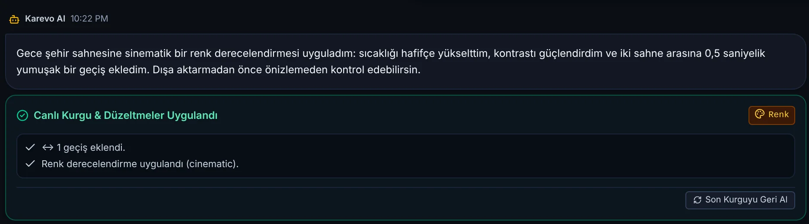
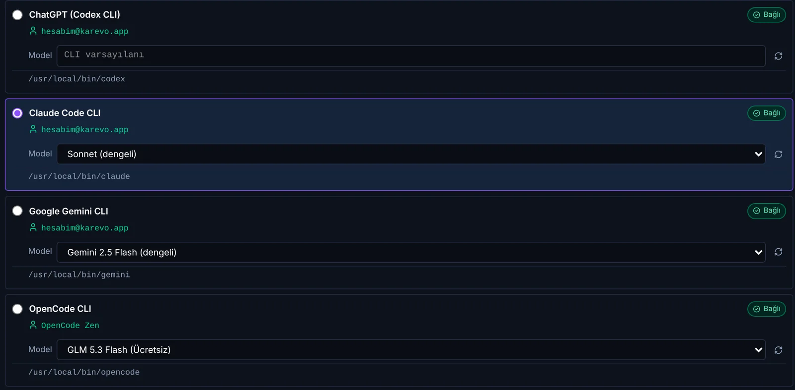
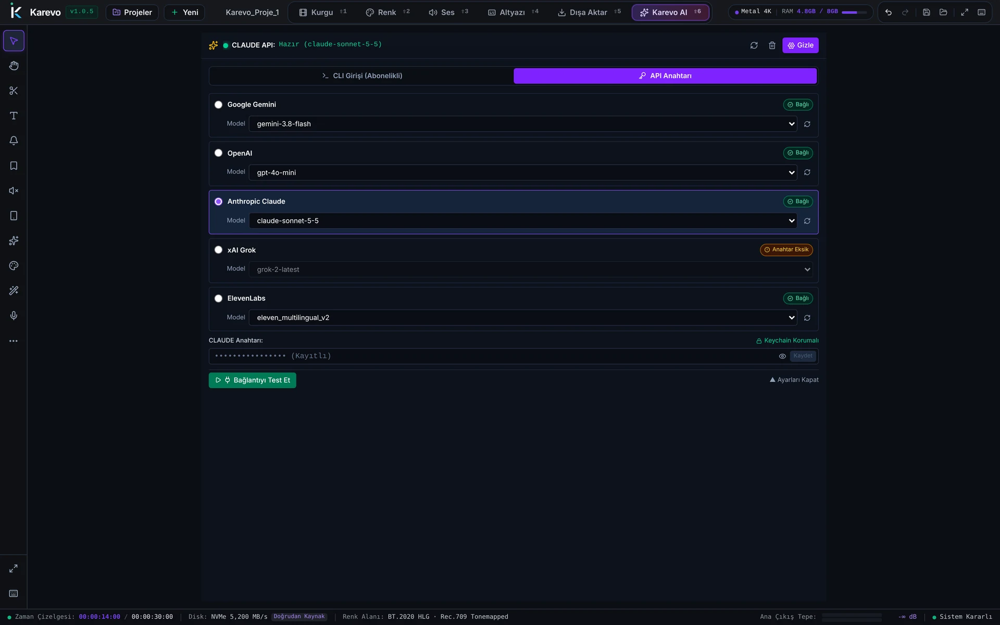
Renk
Renk tekerlekleri, eğriler, LUT ve node'lar. 51 hazır .cube LUT galerisi ve LUT yoğunluğu. Canlı skoplar: RGB Parade ve vektörskop.
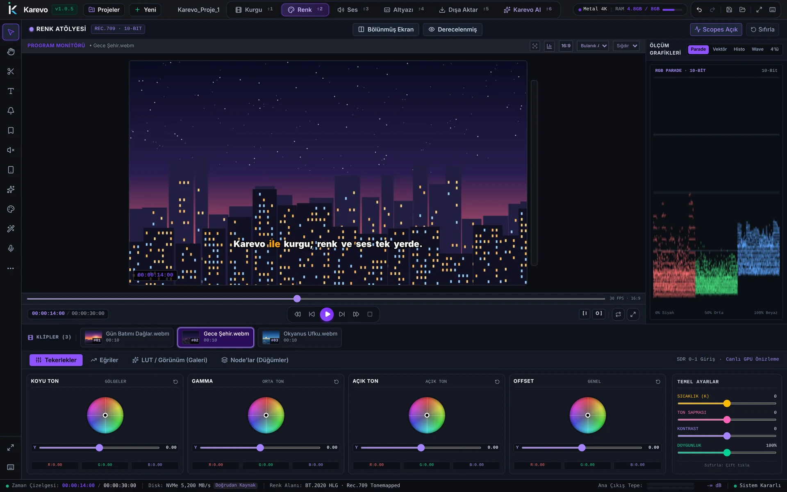
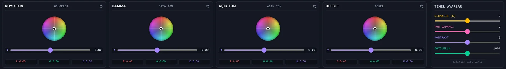
Ses
6 bantlı EQ, kompresör, gürültü azaltma ve ducking. LUFS normalizasyonu: YouTube −14, Podcast −16, EBU R128.
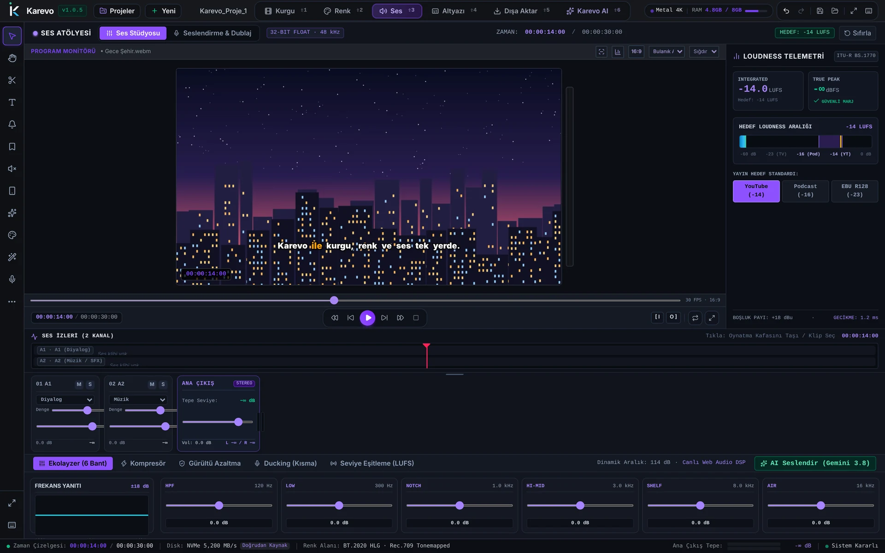
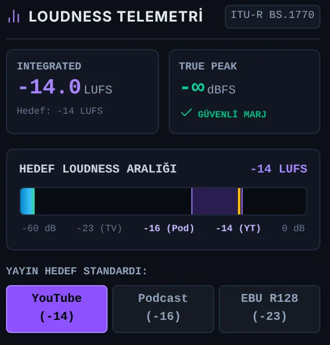
ITU-R BS.1770 ölçümü: entegre LUFS ve true peak, hedef aralık üzerinde canlı gösterilir.
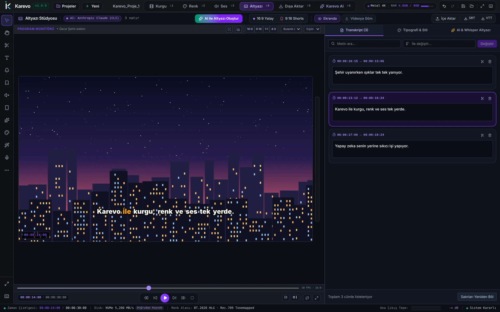
Altyazı
Yapay zekâ ile otomatik altyazı. Whisper ile çözümleme, kelime vurgulu stil, SRT ve VTT çıktısı.
Her satır kendi zaman aralığıyla gelir. Metinde arayın, toplu değiştirin, satırı bölün ya da silin.
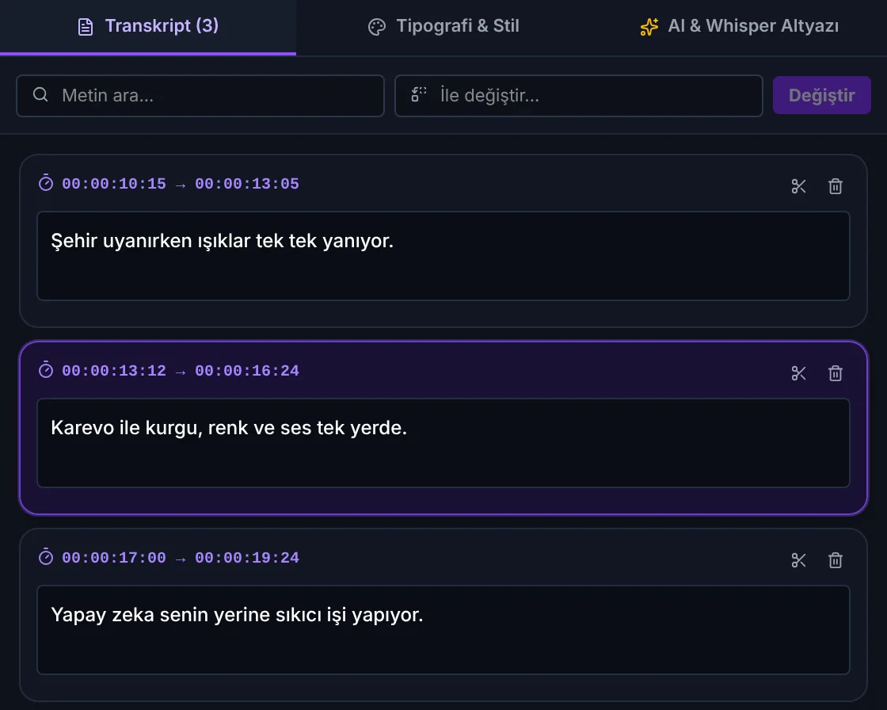
Dışa Aktar
YouTube, Shorts, Reels ve TikTok ön ayarları. 4K'ya kadar. 17 platform ön ayarı, render kuyruğu ve toplu sosyal medya dışa aktarma. 16:9, 9:16, 1:1 ve 4:5 formatları, bulanık arka plan.
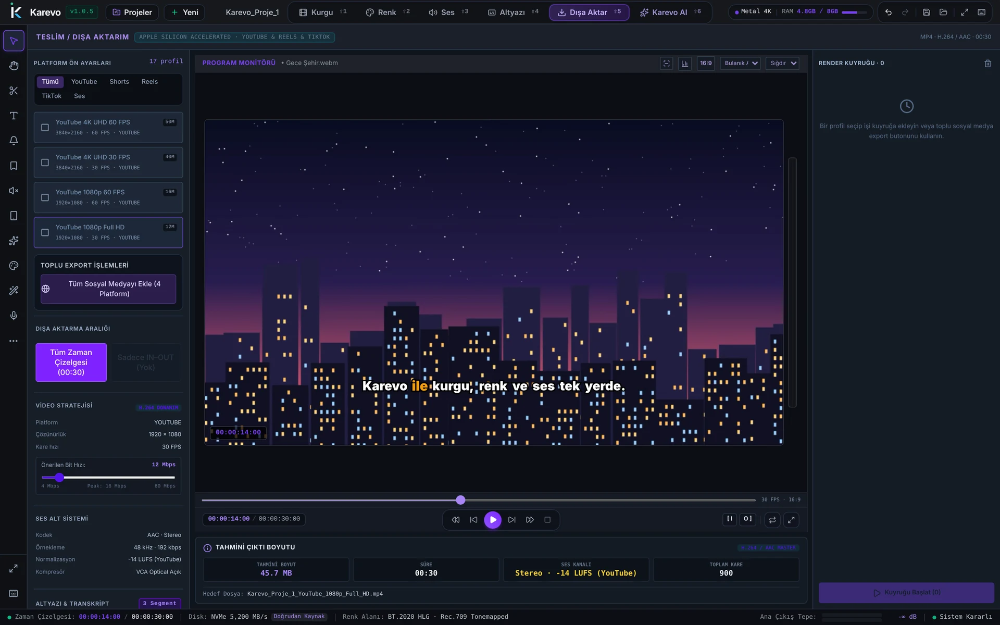
Ekranlar
Karşılama, kurgu, renk, ses, altyazı, dışa aktarma, Karevo AI ve model seçici.
Özellikler
Çok izli timeline, kenetlenme ve geçişler. Program monitörü aynı pencerede.

Klipleri arayın, süzün ve timeline'a ekleyin. Karevo AI medya havuzunu görür.
51 hazır .cube LUT, LUT yoğunluğu, renk tekerlekleri, eğriler, node'lar, RGB Parade ve vektörskop.
6 bantlı EQ, kompresör, gürültü azaltma, ducking ve LUFS normalizasyonu.
Görsel kimliğinizi projenin içinde hazır tutun.
Otomatik altyazı, kelime vurgulu stil, transkript düzenleme. SRT ve VTT çıktısı.
Claude, Codex, Gemini ve OpenCode CLI'ları ile API anahtarları. Her sağlayıcıya ayrı model.
Karevo AI kurguyu canlı uygular. Beğenmezseniz son kurguyu tek tıkla geri alın.
17 platform ön ayarı: YouTube, Shorts, Reels ve TikTok. 4K'ya kadar, render kuyruğu, toplu sosyal medya dışa aktarma. 16:9, 9:16, 1:1 ve 4:5, bulanık arka plan.
Sorular
Evet. Karevo Mac için ücretsiz olacak, indirme bağlantısı yakında bu sayfada.
Apple Silicon işlemcili Mac'lerde, macOS üzerinde çalışır.
Codex, Claude veya Gemini CLI'larından biri ya da bir API anahtarı. Karevo AI her konuda sohbet eder, kurgu komutlarını timeline'da uygular ve medya havuzunu görür.
Evet. Karevo'nun arayüzü Türkçe.
Yakında · Mac için ücretsiz
İndirme bağlantısı yayın günü bu sayfada olacak.